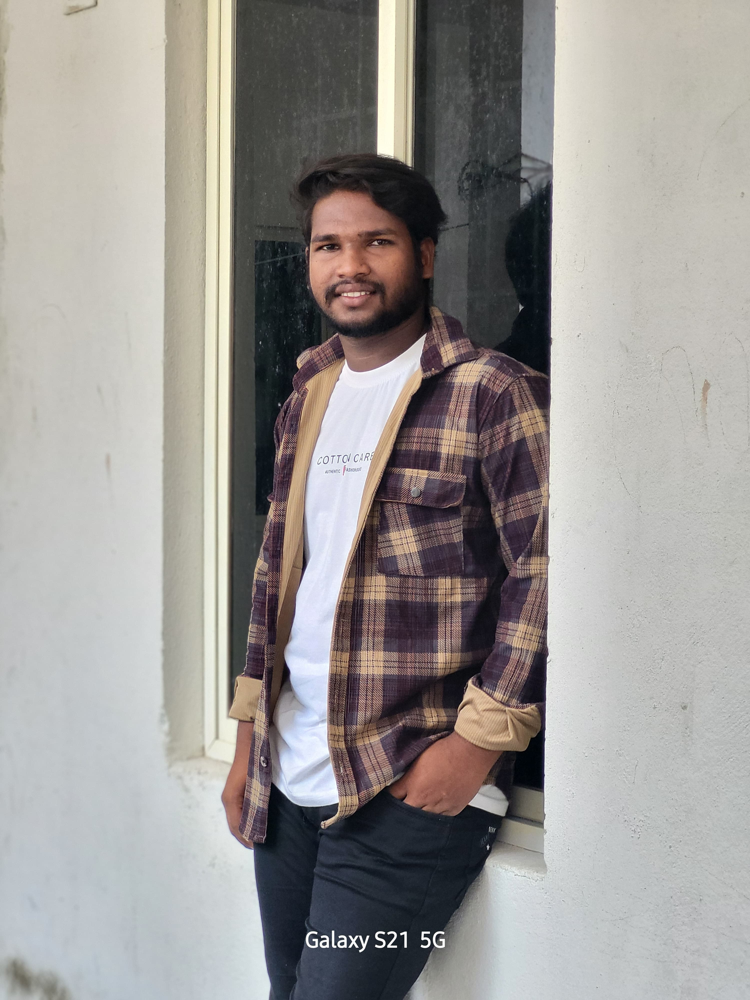

About Us
Founded in 2025, Peter's Café is dedicated to serving high-quality, organic coffee in a warm, welcoming environment. Our team is passionate about crafting the perfect cup for every customer.
Our Story
Peter's Café started as a small coffee cart in the heart of the city, quickly gaining a loyal following. We believe in sustainability and source our beans from local farmers who practice ethical farming methods.
Our Mission
Our mission is to create a community hub where everyone feels welcome to enjoy great coffee and connect with others. We strive to minimize our environmental impact and support local businesses.
Our Values
- Quality: We use only the best ingredients and equipment to ensure every cup is perfect.
- Sustainability: We are committed to eco-friendly practices, from sourcing to serving.
- Community: We believe in building relationships with our customers and supporting local initiatives.
Meet our Team
Deeven Paul
Head - Deeven has over 10 years of experience in the coffee industry and is passionate about perfecting every brew.
Naru & Gani
Manager's - Naru & Gani ensure everything runs smoothly and love interacting with our customers.
Contact Us
If you have any questions or feedback, feel free to reach out to us through our contact page.
Follow Us
Stay updated with our latest news and promotions by following us on social media: